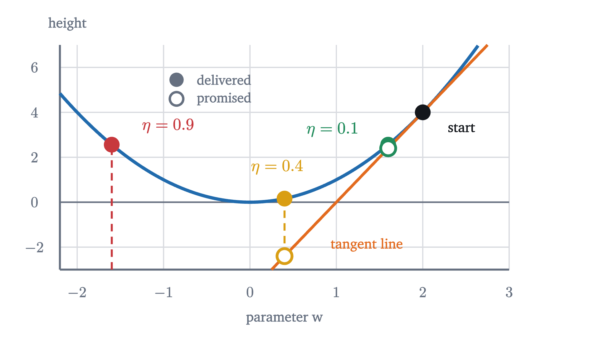
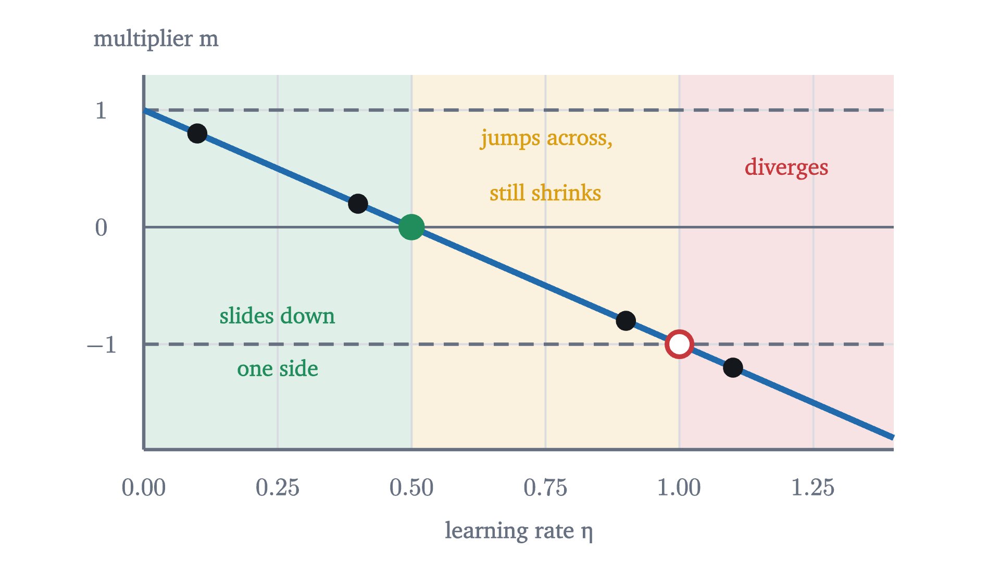
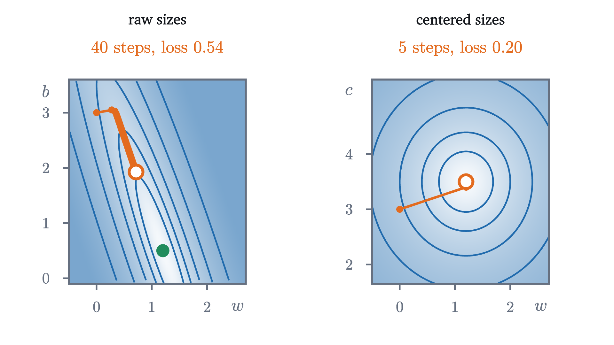

Gradient descent: learning by walking downhill
Derive the gradient descent update from the tangent line, prove exactly which learning rates converge on a parabola, and watch it train a line on real data.
AssumesWhat "learning" means: fitting a line to dataWhat is a derivative? Speed at a single instantThe gradient: which way is uphill?
You are standing on a hillside in fog so thick that you cannot see your own feet. You want to reach the valley floor. What do you do?
Almost everyone gives the same answer: feel which way the ground slopes under your boots, take a step downhill, and repeat. It uses no map and no plan, only the slope at the one point where you stand. Yet it is how nearly every machine learning model is trained, including ones with billions of adjustable numbers. It also has a trap that the hillside story hides: take your steps a little too long, and each one carries you higher than the last, however carefully you measured the slope.
The problem: a surface with no formula for its bottom
In the previous lesson we fitted a line $\hat y = wx + b$ to four house sales. The model has two parameters, the slope $w$ and the intercept $b$. Its loss, the mean of the squared errors, is a function of those two numbers,
and training meant finding the $(w, b)$ where $L$ is smallest. Algebra found it: the loss surface is a bowl whose lowest point is at $w = 1.2$, $b = 0.5$, where $L = 0.2$.
The algebra worked because $L$ is quadratic. For the models of the coming lessons it is not, and no formula gives the lowest point. What we can still do, for any loss built from differentiable pieces, is evaluate two things at whatever parameters we currently hold: the loss, and its slope. That is the walker in the fog. We will turn “step downhill” into a precise rule, find out exactly when it works on a case simple enough to solve completely, and then run it on the house data, where we know the answer it should reach.
One dial: stepping down a parabola
Start with one parameter and the simplest bowl there is, $f(w) = w^2$, whose lowest point is at $w = 0$. Suppose we are at $w = 2$. The derivative $f'(w) = 2w$ is the slope of the graph, and $f'(2) = 4$ is positive: the curve rises to the right, so downhill is to the left.
How far should we step? A reasonable first rule: in proportion to the slope. Where the curve is steep we are probably far from the bottom and can afford a long step; where it is nearly flat we should tread carefully. Pick a positive number $\eta$ (the Greek letter eta) to set the proportion, and move from $w$ to $w - \eta f'(w)$.
Try $\eta = 0.1$. From $w = 2$ the slope is 4, so we move to $2 - 0.1 \times 4 = 1.6$. There the slope is $3.2$, so we move to $1.6 - 0.32 = 1.28$, then to $1.28 - 0.256 = 1.024$. The steps shrink as the slope does, and $w$ creeps toward 0.
Pause and try
Run the same rule from $w = 2$ with $\eta = 0.4$ for three steps. Then look at your numbers and at $2, 1.6, 1.28, 1.024$: in each run, what is the ratio of each $w$ to the one before?
Show answerHide answer
With $\eta = 0.4$: $2 - 0.4 \times 4 = 0.4$, then $0.4 - 0.4 \times 0.8 = 0.08$, then $0.016$. Each value is $0.2$ times the previous one; in the first run the ratio was $0.8$. The larger $\eta$ gets to the bottom much faster.
So a bigger $\eta$ is better? Push it and see.
Pause and try
Run three steps from $w = 2$ with $\eta = 0.9$, and three more with $\eta = 1.1$. What is different about the two?
Show answerHide answer
With $\eta = 0.9$: $2 - 0.9 \times 4 = -1.6$, then $-1.6 + 0.9 \times 3.2 = 1.28$, then $1.28 - 0.9 \times 2.56 = -1.024$. The step jumps clear over the bottom and lands on the opposite wall, but lower than where it started: each value is $-0.8$ times the last. With $\eta = 1.1$: $2 - 4.4 = -2.4$, then $-2.4 + 1.1 \times 4.8 = 2.88$, then $2.88 - 1.1 \times 5.76 = -3.456$. Each landing is higher than the take-off: the ratio is $-1.2$.
Three questions come out of this experiment. Why step in proportion to the slope at all? Why does a downhill rule sometimes go uphill? And where exactly is the boundary?
Where the rule comes from
The first two questions have one answer. The derivative $f'(w)$ is the slope of the tangent line at $w$, and near the point of tangency the curve and the line are close. So for a small change $\Delta$ in the parameter,
This is the first-order approximation of $f$ at $w$. It reduces our problem to a question about a straight line, and the answer is immediate: $f(w) + f'(w)\Delta$ is smaller than $f(w)$ for any $\Delta$ whose sign is opposite to that of $f'(w)$. The choice $\Delta = -\eta f'(w)$ with $\eta > 0$ always has that property, and it predicts
The predicted change, $-\eta f'(w)^2$, is negative whenever the slope is not zero.
This is the rule we ran by hand. Notice what its justification does not say. The approximation is trustworthy only for small $\Delta$, and $\Delta = -\eta f'(w)$ is small only if $\eta$ is. The tangent line promises a drop of $\eta f'(w)^2$, and the more you ask of it the less the curve agrees.

Exactly which learning rates work
The third question can be answered completely for a parabola. On $f(w) = w^2$ every run multiplied $w$ by the same number at each step: $0.8$, $0.2$, $-0.8$, $-1.2$ for $\eta = 0.1, 0.4, 0.9, 1.1$. Those multipliers are all $1 - 2\eta$, because $w - \eta \cdot 2w = (1 - 2\eta)\,w$. The same happens for a parabola of any steepness.
For $f(w) = w^2$ we have $a = 1$, so the boundary is $\eta = 1$: the rate $0.9$ converged and $1.1$ did not. Shifting the parabola changes nothing: for $f(w) = a(w - w^*)^2 + c$ the update gives $w_{k+1} - w^* = (1 - 2a\eta)(w_k - w^*)$, so the same five cases describe the distance from $w^*$.

The boundary depends on $a$, which measures how sharply the parabola curves: its second derivative is $f'' = 2a$, so the condition reads $\eta < 2/f''$. A sharply curved bowl demands small steps. The reason is the error of the first-order approximation. For $f(w) = aw^2$ direct expansion gives
which is the tangent line’s promise multiplied by $(1 - a\eta)$: nearly kept when $a\eta$ is small, reversed when $a\eta > 1$.
Two dials: the gradient
Now return to the houses and their two parameters. A function of two variables has two slopes at each point, one for each variable, called partial derivatives: $\partial L/\partial w$ is the derivative of $L$ with respect to $w$ with $b$ held fixed, and $\partial L/\partial b$ the reverse. Together they form a vector, the gradient:
The first-order approximation now reads $L(w + \Delta_w, b + \Delta_b) \approx L(w, b) + \frac{\partial L}{\partial w}\Delta_w + \frac{\partial L}{\partial b}\Delta_b$, and the last two terms are the dot product of the gradient with the step $\Delta = (\Delta_w, \Delta_b)$. We want the step that makes it most negative. Since $\nabla L \cdot \Delta = |\nabla L|\,|\Delta| \cos\theta$, where $\theta$ is the angle between the two vectors, a step of given length does best when $\cos\theta = -1$: when $\Delta$ points directly opposite to the gradient. Taking $\Delta = -\eta\,\nabla L$ predicts a change of $-\eta\,|\nabla L|^2$, as in one variable.
For a loss that is a mean over data, the gradient is computed from the errors. With $e_i = wx_i + b - y_i$ and $L = \frac1n\sum e_i^2$, the chain rule gives
Let us run it by hand. Start from the flat line $\hat y = 3$, which guesses $300,000 for every house: $w = 0$, $b = 3$. The prices are $1.5, 3.5, 3.5, 5.5$ at sizes $1, 2, 3, 4$, so the errors are $1.5, -0.5, -0.5, -2.5$ and the loss is $(2.25 + 0.25 + 0.25 + 6.25)/4 = 2.25$. Then $\sum e_i = -2$ and $\sum e_ix_i = 1.5 - 1 - 1.5 - 10 = -11$, so
Pause and try
Take one step from $(0, 3)$ with learning rate $\eta = 0.05$. Where do you land, and what is the loss there? (Use $L = 7.5w^2 + 5wb + b^2 - 20.5w - 7b + 14.25$.)
Show answerHide answer
$w = 0 - 0.05 \times (-5.5) = 0.275$ and $b = 3 - 0.05 \times (-1) = 3.05$. The loss is $7.5(0.0756) + 5(0.8388) + 9.3025 - 5.6375 - 21.35 + 14.25 \approx 1.326$. One step took the loss from $2.25$ to $1.33$. The tangent approximation promised a drop of $\eta\,|\nabla L|^2 = 0.05 \times 31.25 \approx 1.56$, and the surface delivered $0.92$.
The second step starts from $(0.275, 3.05)$, where the gradient is $(-1.125, 0.475)$, and lands at $(0.331, 3.026)$ with loss $1.269$. The first step lowered the loss by $0.92$ and the second by only $0.06$.
Why the valley is slow
The figure shows the cases of the one-dial theorem in two directions at once. Across the valley the surface is a steep parabola, and the walker behaves as in cases 1, 3 and 5. Along the valley it is a very shallow parabola, with a multiplier close to 1. Here is why the two directions can be treated separately.
The minimum is $p^* = (1.2, 0.5)$. Writing $\Delta_w = w - 1.2$ and $\Delta_b = b - 0.5$, the gradient formula becomes $\nabla L = (15\Delta_w + 5\Delta_b,\; 5\Delta_w + 2\Delta_b)$, as you can check by expanding. So the gradient is a linear function of the displacement from the minimum. Test two displacements. For $(\Delta_w, \Delta_b) = (0.322, -0.947)$, which points along the valley, the gradient is $(15 \times 0.322 - 5 \times 0.947,\; 5 \times 0.322 - 2 \times 0.947) = (0.095, -0.284)$, which is $0.299$ times the displacement, up to rounding. For $(0.947, 0.322)$, across the valley, the gradient is $(15.82, 5.38)$, which is $16.7$ times the displacement. In these two directions the gradient points along the displacement, so a step of gradient descent just rescales it:
Every displacement is a sum of a piece along the valley and a piece across it, and because the gradient is linear the two pieces evolve independently, each obeying the one-dial theorem with $2a$ equal to $0.299$ or $16.7$. (The two directions are the eigenvectors of the matrix of second derivatives of $L$. Such a perpendicular pair exists for every quadratic bowl, by the spectral theorem for symmetric matrices; here we verified it by multiplication.)
Convergence across the valley needs $|1 - 16.7\eta| < 1$, that is $\eta < 2/16.7 \approx 0.120$, which is why $0.11$ zigzagged home and $0.125$ blew up. But with $\eta$ capped near $0.12$, the multiplier along the valley is at best $1 - 0.299 \times 0.12 \approx 0.964$. With $\eta = 0.05$ it is $0.985$, and shrinking the valley error by a factor of 100 takes $\ln 0.01 / \ln 0.985 \approx 305$ steps. The steep direction sets the speed limit, and the shallow direction has to live with it.
There is a cure for this valley, and it is used everywhere. The valley exists because the sizes $1, 2, 3, 4$ all lie on one side of zero, so tilting the line and shifting it have overlapping effects. Subtract the mean size, $2.5$, from every size and fit $\hat y = w(x - 2.5) + c$ instead. This is the same family of lines, with $c = b + 2.5w$. Its loss is $1.25(w - 1.2)^2 + (c - 3.5)^2 + 0.2$, by the formula of the previous lesson, and the two directions now have $2a = 2.5$ and $2a = 2$: a nearly round bowl.

Cheaper gradients: stochastic and mini-batch descent
The gradient of a mean is the mean of the gradients: $\nabla L = \frac1n\sum \nabla\ell_i$, where $\ell_i = e_i^2$ is the loss on example $i$ alone. With four houses that is nothing. With ten million examples, each step as defined above reads all ten million. Stochastic gradient descent instead picks one example at random and steps along $-\eta\,\nabla\ell_i$; mini-batch gradient descent averages over a small random subset, typically a few dozen to a few thousand examples. Either is an estimate of the true gradient that is right on average and noisy on any one step. The path jitters, but each step is far cheaper, and in practice that trade wins. What we found about learning rates carries over, with the extra requirement that the noise be tamed, usually by shrinking $\eta$ as training proceeds.
When the surface is not a bowl
For the line-fitting loss, the previous lesson proved that the surface is convex: a single bowl. Then any point where the gradient is zero is the lowest point, and gradient descent, if it converges, converges to the best parameters. Most models lose that guarantee.
Consider the one-parameter function $f(w) = w^4 - 2w^2 + 0.5w$. Its derivative $f'(w) = 4w^3 - 4w + 0.5$ vanishes at three places: $w \approx -1.057$, $w \approx 0.127$ and $w \approx 0.930$.
Its graph has two dips, at $-1.057$ and $0.930$, separated by a hump at $0.127$. A walker that starts at $w = 0.3$, to the right of the hump, feels a negative slope, moves right, and settles in the right dip, where $f \approx -0.52$. A walker that starts at $-0.2$ settles in the left dip, where $f \approx -1.51$. The first walker ends at a point that is not the lowest.
Gradient descent stops moving exactly at stationary points, since the update is $-\eta\nabla L$. It cannot tell a local minimum from a global one, because both are flat. Which one it reaches depends on where it started.
In two or more dimensions there is a third kind of stationary point, which is neither a dip nor a peak. Take $g(x, y) = x^2 - y^2$. Its gradient $(2x, -2y)$ vanishes at the origin. Along the $x$ axis the origin is the bottom of the parabola $x^2$; along the $y$ axis it is the top of the parabola $-y^2$. Such a point is called a saddle point. Gradient descent on $g$ multiplies $x$ by $1 - 2\eta$ and $y$ by $1 + 2\eta$ at every step, so $x$ shrinks and $y$ grows.
Only starts exactly on the $x$ axis are drawn into this saddle. Any other start eventually escapes, though it may loiter for many steps while the gradient is tiny. In large models, slow progress near saddle points and flat regions is a more frequent complaint than a poor local minimum.
So the guarantees are these. For a convex differentiable loss, every stationary point is a global minimum (a theorem of convex analysis), so a convergent run has found the best parameters. For a general loss, a convergent run has found a stationary point, and nothing more is promised.
Worked examples
Stepping back
The hard part was the learning rate. The update rule falls straight out of the tangent approximation, but that approximation is local and the rule takes steps of finite size, so everything turns on how far the function departs from its tangent over one step, which is to say on curvature. On a parabola we could compute this exactly, and the answer, $\eta < 1/a$, explained both the divergence and the slow crawl along a valley.
The update rule never mentions lines or houses, only a loss and its gradient. The next lesson applies it to a model whose loss has no formula for its minimum, so that descent is the only way to train it. For a neural network even the gradient takes work to compute, and backpropagation is the method for that.
Check yourself
Gradient descent on $f(w) = 4w^2$ is started at $w_0 = 1$ with learning rate $\eta = 0.3$. What happens?
Problems
The first two are computations, the next two combine ideas, and the last two go beyond the lesson.
Problem 1
For $f(w) = 3w^2$ and $w_0 = 1$, compute $w_1, w_2, w_3$ with $\eta = 0.1$. What is the largest learning rate for which gradient descent converges, and which learning rate reaches the minimum in one step?
Show solutionHide solution
$f'(w) = 6w$, so $w \leftarrow w - 0.6w = 0.4w$: $w_1 = 0.4$, $w_2 = 0.16$, $w_3 = 0.064$. With $a = 3$, convergence holds exactly for $0 < \eta < \frac13$: there is no largest such rate, since $\frac13$ itself fails (the walker bounces between $1$ and $-1$). One step suffices when $\eta = \frac{1}{2a} = \frac16$: then $w_1 = 1 - \frac16 \times 6 = 0$.
Problem 2
On the house loss $L = 7.5w^2 + 5wb + b^2 - 20.5w - 7b + 14.25$, compute the gradient at $(w, b) = (1, 1)$, take one step with $\eta = 0.05$, and compare the loss before and after. One of the partial derivatives is zero at $(1, 1)$. Does that mean that dial is already at its best value?
Show solutionHide solution
$\nabla L = (15 + 5 - 20.5,\; 5 + 2 - 7) = (-0.5, 0)$. The step is to $(1 + 0.025, 1) = (1.025, 1)$. Before, $L(1, 1) = 0.25$. After, $L = 7.5(1.050625) + 5.125 + 1 - 21.0125 - 7 + 14.25 = 0.2422$ to four places. The zero partial derivative means that $b = 1$ is the best intercept for the slope $w = 1$. It is not the best overall, which is $0.5$. As soon as $w$ changes, $\partial L/\partial b = 5w + 2b - 7$ is no longer zero: at $(1.025, 1)$ it is $0.125$, and the next step lowers $b$.
Problem 3
A student proposes a simpler rule: “Do not multiply by the slope. Just move a fixed distance $\delta$ in the downhill direction at every step.” Run this rule on $f(w) = w^2$ from $w_0 = 2$ with $\delta = 0.3$ until the pattern is clear. What goes wrong, and how does the gradient descent rule avoid it?
Show solutionHide solution
Downhill is toward 0, so the values are $2, 1.7, 1.4, 1.1, 0.8, 0.5, 0.2$. From $0.2$ the slope is positive, so the walker moves left by $0.3$ to $-0.1$. There the slope is negative, so it moves right to $0.2$, then back to $-0.1$, forever. It never settles: once within $\delta$ of the minimum it oscillates between two points. A smaller $\delta$ shrinks the oscillation but slows the approach in the same proportion. Gradient descent’s step $\eta f'(w)$ shrinks as the slope does, so it is long far from the minimum and short near it.
Problem 4
Using the multipliers found in the lesson: (a) with raw sizes and $\eta = 0.05$, the valley direction is multiplied by $1 - 0.299 \times 0.05$ per step. How many steps reduce that component by a factor of 1000? (b) With centered sizes, the loss is $1.25(w - 1.2)^2 + (c - 3.5)^2 + 0.2$ and $\eta = 0.4$. Find the multiplier in each direction, and the number of steps that reduce the error by a factor of 1000.
Show solutionHide solution
(a) The multiplier is $0.98505$. We need $0.98505^k \le 0.001$, so $k \ge \ln 0.001 / \ln 0.98505 = 6.908 / 0.015063 \approx 458.6$: 459 steps. (b) In the $w$ direction $a = 1.25$, so the multiplier is $1 - 2 \times 1.25 \times 0.4 = 0$: that coordinate is exact after one step. In the $c$ direction $a = 1$ and the multiplier is $1 - 0.8 = 0.2$. Since $0.2^4 = 0.0016$ and $0.2^5 = 0.00032$, five steps are enough. Centering turned 459 steps into 5.
Problem 5
(No single safe rate.) Let $f(w) = w^4$ and fix $\eta > 0$. (a) Show that the update is $w_{k+1} = w_k\,(1 - 4\eta w_k^2)$. (b) Prove that if $4\eta w_0^2 < 2$ and $w_0 \neq 0$, then $|w_k|$ decreases and converges to 0. (c) Show that if $4\eta w_0^2 > 2$ then $|w_k|$ increases without bound. (d) What does this say about choosing a learning rate for a function that is not quadratic?
Show solutionHide solution
(a) $f'(w) = 4w^3$, so $w_{k+1} = w_k - 4\eta w_k^3 = w_k(1 - 4\eta w_k^2)$.
(b) Put $t_k = 4\eta w_k^2$, so $|w_{k+1}| = |w_k|\,|1 - t_k|$. If some $w_k$ is 0, every later term is 0 and the claim holds, so suppose none is. If $0 < t_k < 2$ then $|1 - t_k| < 1$, so $|w_{k+1}| < |w_k|$, and therefore $t_{k+1} < t_k < 2$ as well. By induction the sequence $|w_k|$ is decreasing. A decreasing sequence of nonnegative numbers has a limit $\ell \ge 0$. Letting $k \to \infty$ in $|w_{k+1}| = |w_k|\,|1 - 4\eta w_k^2|$ gives $\ell = \ell\,|1 - 4\eta\ell^2|$, so either $\ell = 0$ or $|1 - 4\eta\ell^2| = 1$, which means $4\eta\ell^2 = 0$ or $2$. But $4\eta\ell^2 \le t_1 < 2$, so $\ell = 0$.
(c) If $t_k > 2$ then $|1 - t_k| = t_k - 1 > 1$, so $|w_{k+1}| > |w_k|$ and $t_{k+1} > t_k > 2$. By induction $|w_k|$ increases, and at each step it is multiplied by at least $t_0 - 1 > 1$, so it grows without bound.
(d) For $w^4$ the boundary between convergence and divergence is $|w_0| = 1/\sqrt{2\eta}$: every learning rate works for starts close enough to 0 and fails for starts far enough away. The curvature $f''(w) = 12w^2$ is not constant, so the safe rate depends on where the walker is.
Problem 6
For the saddle $g(x, y) = x^2 - y^2$ and a learning rate $0 < \eta < 1$: (a) write the gradient descent update for $x$ and for $y$; (b) show that the run converges to the saddle point $(0, 0)$ if and only if $y_0 = 0$; (c) with $\eta = 0.1$ and $y_0 = 0.01$, how many steps pass before $|y|$ exceeds 1?
Show solutionHide solution
(a) $\nabla g = (2x, -2y)$, so $x \leftarrow (1 - 2\eta)x$ and $y \leftarrow (1 + 2\eta)y$. (b) After $k$ steps, $x_k = (1 - 2\eta)^kx_0$ and $y_k = (1 + 2\eta)^ky_0$. Since $0 < \eta < 1$, $|1 - 2\eta| < 1$ and $x_k \to 0$ for every $x_0$. Since $1 + 2\eta > 1$, $|y_k| \to \infty$ unless $y_0 = 0$, in which case $y_k = 0$ for all $k$. So the run converges to $(0, 0)$ exactly when $y_0 = 0$. (c) $y_k = 0.01 \times 1.2^k$ exceeds 1 when $1.2^k > 100$, that is $k > \ln 100/\ln 1.2 = 4.605/0.1823 \approx 25.3$. So $|y|$ first exceeds 1 at step 26.